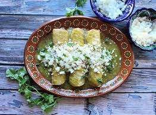

Green enchiladas

A colorful dish
Green enchiladas or "enchiladas verdes" in Mexico is a pretty tasteful and colorful dish you can easily prepare in a oven, pouring the green sauce all over the enchiladas make this dish pretty delicious
Ingredients
- 2 1/4 pounds small green tomatillos, husks removed
- 3 serrano peppers
- 2 cloves garlic
- 1 cup vegetable oil for frying
- 9 corn tortillas
- 3 cups water
- 4 teaspoons chicken bouillon granules
- 1/2 store-bought rotisserie chicken, meat removed and shredded
- 1/4 head iceberg lettuce, shredded
- 1 cup cilantro leaves
- 1 (8 ounce) container Mexican crema, crema fresca
- 1 cup grated cotija cheese